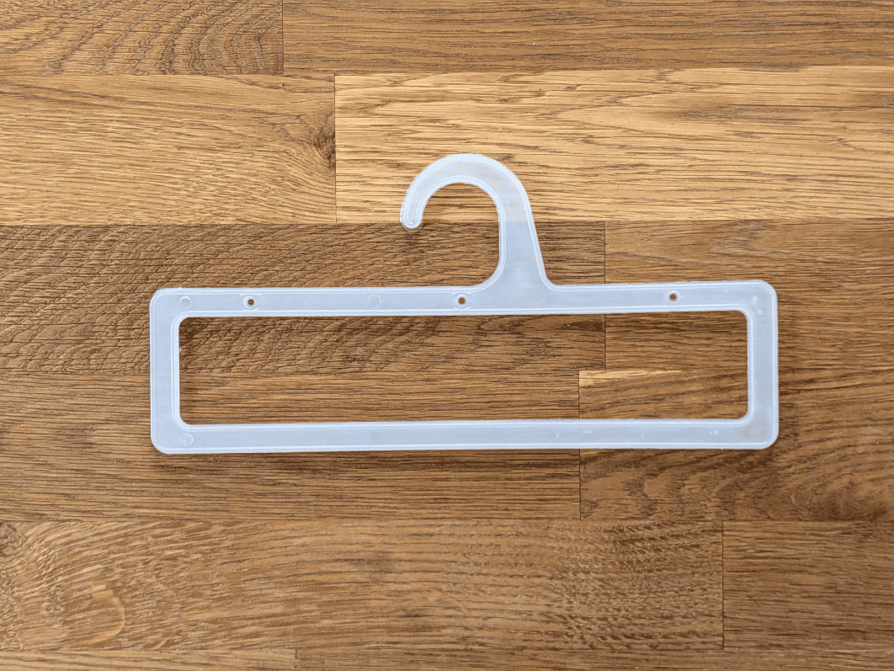

Wieszaki
Produkujemy wytrzymałe wieszaki pościelowe oraz odzieżowe z wysokiej jakości tworzyw oryginalnych oraz pochodzących z recyklingu (regranulatu). Nasze produkty charakteryzują się gładką powierzchnią, odpornością na pęknięcia i ekologicznym procesem wytwarzania. Idealne dla hurtowni odzieży, producentów pościeli, sklepów i pralni.

Prostokątny uchwyt do lekkich koców i narzut, zapewniający estetyczną ekspozycję bez zagnieceń materiału
Wymiary wewnętrzne:
Szerokość: 230mm
Wysokość: 45mm

Mała zawieszka do ręczników kąpielowych i zestawów kuchennych, idealna do pakowania w komplety.
Wymiary wewnętrzne:
Szerokość: 180mm
Wysokość: 20mm

Solidny, szeroki wieszak na ciężkie koce i pledy, wykonany z wytrzymałego czarnego regranulatu.
Wymiary wewnętrzne:
Szerokość: 250mm
Wysokość: 50mm

Klasyczna rama na np. ręczniki hotelowe, stabilnie utrzymująca grubą strukturę frotte.
Wymiary wewnętrzne:
Szerokość: 240mm
Wysokość: 50mm

Niskoprofilowy uchwyt do cienkich kocyków dziecięcych lub poszewek dekoracyjnych.
Wymiary wewnętrzne:
Szerokość: 240mm
Wysokość: 30mm

Sztywna zawieszka do tekstyliów domowych o gładkiej strukturze, odporna.
Wymiary wewnętrzne:
Szerokość: 180mm
Wysokość: 40mm

Najmniejszy model uchwytu, dedykowany do ściereczek, mniejszych ręczników lub próbek materiałów.
Wymiary wewnętrzne:
Szerokość: 160mm
Wysokość: 15mm
Szpule
Szpule przemysłowe OLPLAST to gwarancja stabilności nawoju. Wykonane metodą wtrysku z tworzyw sztucznych, sprawdzają się przy produkcji różnego typu łańcuchów i sznurków oraz w przemyśle tekstylnym. Oferujemy różne średnice zewnętrzne i szerokości ringu, dostosowane do wymagań technicznych klienta.


Uniwersalna szpula do nawoju lamówek, tasiemek wykończeniowych oraz sznurków do koców.
Wymiary:
Średnica zewnętrzna: 85mm
Średnica wewnętrzna: 65mm
Szerokość ringu: 40mm


Model z wąskim ringiem, ułatwiający precyzyjne nawijanie nici szwalniczych i gum pasmanteryjnych.
Wymiary:
Średnica zewnętrzna: 85mm
Średnica wewnętrzna: 65mm
Szerokość ringu: 25mm


Szpula z dużym rdzeniem, chroniąca delikatne taśmy ozdobne przed trwałym odkształceniem.
Wymiary:
Średnica zewnętrzna: 85mm
Średnica wewnętrzna: 55mm
Szerokość ringu: 40mm


Wariant o dużej pojemności, zaprojektowany dla producentów nici i tasiemek do wykańczania ręczników.
Wymiary:
Średnica zewnętrzna: 85mm
Średnica wewnętrzna: 45mm
Szerokość ringu: 40mm


Przemysłowa czarna szpula do ciężkich sznurów technicznych i grubych nici tapicerskich.
Wymiary:
Średnica zewnętrzna: 180mm


Standardowa szpula techniczna P125 do maszynowego nawoju materiałów pasmanteryjnych.
Wymiary:
Średnica zewnętrzna: 125mm


Wytrzymały model P100, idealny do przechowywania i transportu taśm poliestrowych.
Wymiary:
Średnica zewnętrzna: 100mm


Biała szpula o gładkich krawędziach, bezpieczna dla satynowych wstążek i jedwabnych tasiemek.
Wymiary:
Średnica zewnętrzna: 135mm
Średnica wewnętrzna: 58mm
Szerokość ringu: 28mm


Kompaktowa szpula pasmanteryjna, sprawdzająca się w sprzedaży detalicznej i hurtowej.
Wymiary:
Średnica zewnętrzna: 115mm
Średnica wewnętrzna: 58mm
Szerokość ringu: 18mm
Ringi


Wymiary:
Średnica: 58mm
Szerokość: 18mm


Wymiary:
Średnica: 58mm
Szerokość: 28mm
Kontakt
Zapraszam do kontaktu
Telefon: +48 504 639 001
Grzegorz Szczepaniak